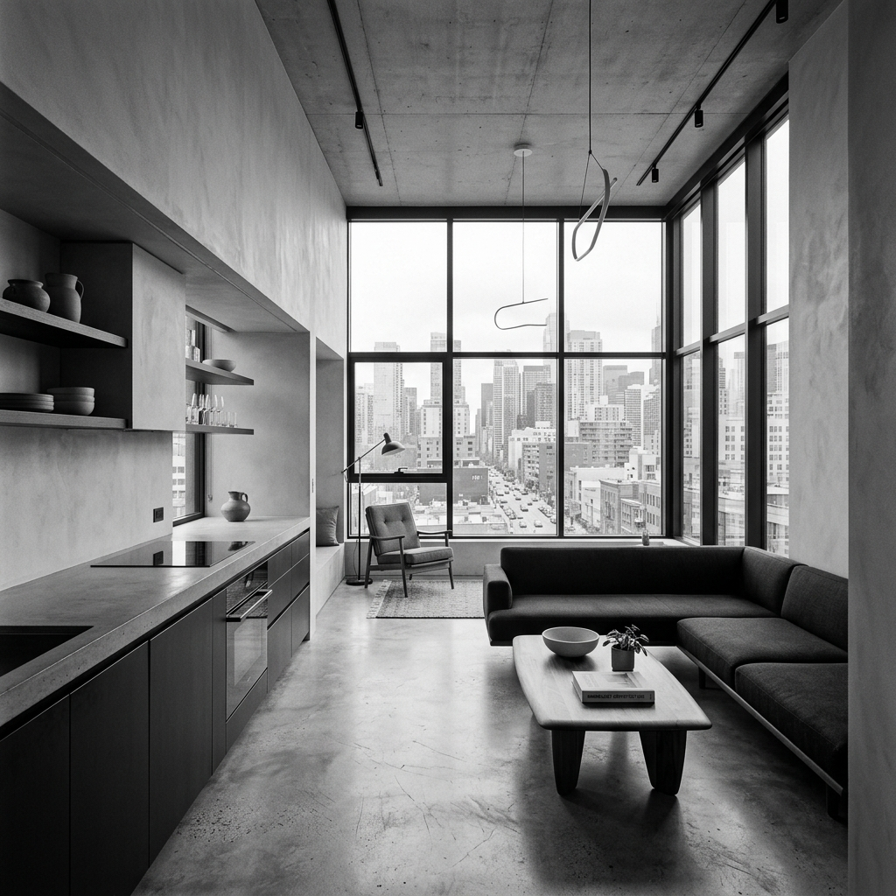

Avec la densification des métropoles, les mètres carrés n'ont jamais été aussi précieux. Rencontre avec des architectes qui ont fait le pari de transformer des espaces ultra-restreints en véritables havres de paix minimalistes et ultra-fonctionnels.
La vie en ville impose aujourd'hui de revoir complètement notre rapport à l'habitat. Fini l'accumulation d'objets, place au minimalisme où chaque meuble a une double, voire une triple fonction.
La lumière comme espace
L'un des plus grands défis de l'architecture urbaine est l'apport de lumière naturelle. Plutôt que de diviser les pièces, la tendance est à l'ouverture totale avec des cloisons en verre, des murs clairs et l'intégration de matériaux bruts comme le béton lissé qui réfléchit la luminosité.

Le luxe du vide
Paradoxalement, pour vivre confortablement dans un petit espace, il faut créer du vide. Les rangements sur-mesure invisibles du sol au plafond permettent d'effacer le désordre de la vie quotidienne pour ne laisser place qu'aux lignes pures de l'architecture.
C'est dans cette quête de simplicité que l'appartement urbain de demain se dessine : intelligent, épuré, et surtout, pensé autour du bien-être psychologique de ses occupants, offrant un vrai refuge face au tumulte de la ville.
← Retour à l'accueil